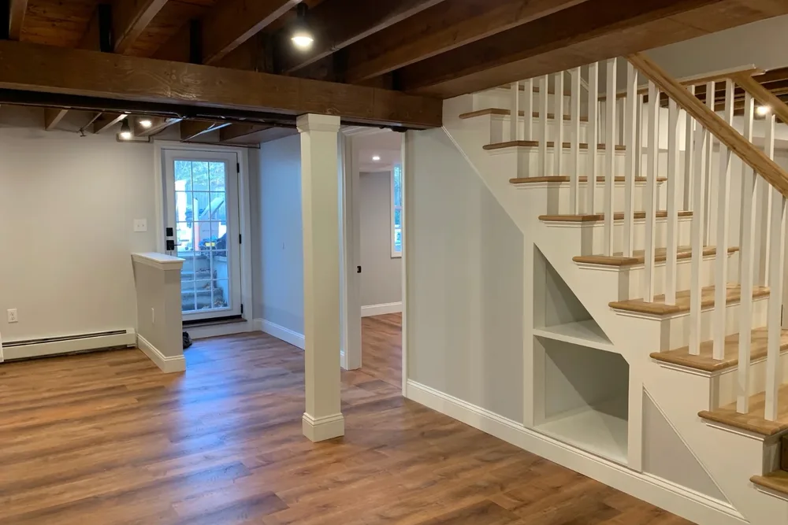

Home remodeling contractors in Massachusetts
Home remodeling contractors for whole-house and interior renovations in Massachusetts
Home remodeling contractors at DeFaria Construction plan and build whole-house remodels, layout changes and room-by-room renovations, with one owner-led team from design to final walkthrough across Essex and Middlesex County.
Our work
A real DeFaria kitchen, before and after
Dated wood cabinets and dark counters at the start, then a bright kitchen with new cabinets, counters and stainless appliances. Real project, real footage.
Get a Free Estimate
The short answer
What do home remodeling contractors handle?

Home remodeling contractors plan, permit and build changes to an existing house, from a single room to the whole interior. A good remodeling contractor coordinates every trade, protects the parts of the home you are still living in, and is accountable for the finished result, not just one piece of it.
- Whole-house and whole-floor renovations.
- Kitchen and bathroom remodels.
- Opening walls and changing layouts, with beams where needed.
- Basement and attic conversions into living space.
- Flooring, trim, doors, drywall, plaster and paint.
- Permits, inspections and licensed electrical and plumbing work.
DeFaria handles all of it as one project, with Luiz DeFaria as your single point of contact.
Planning
Whole-house remodeling or one room at a time?
Many North Shore homeowners search for whole-house remodeling once they realize the kitchen, bathroom and floors all need work. Doing it together usually costs less overall: walls are opened once, trades come once, permits are combined and finishes match from room to room.
- Whole-house makes sense when systems, layout and finishes are all dated.
- Phasing room by room makes sense when budget or living at home comes first.
- Either way, a master plan prevents tearing out new work later.
- Plumbing, electrical and structure are planned for the whole house up front.
We often map the full plan at the first walkthrough and then build it in phases that fit your budget.
Cost
How much does a home remodel cost in Massachusetts?
These are typical 2026 ranges in Essex and Middlesex County:
| Project | Typical 2026 range | What moves it |
|---|---|---|
| Single room refresh or remodel | From about $15,000 | Size, finishes, repairs |
| Bathroom remodel | $10,000 to $80,000+ | Layout changes, tile, fixtures |
| Kitchen remodel | $18,000 to $120,000+ | Cabinets, layout, appliances |
| Basement finishing | $30,000 to $75,000 | Moisture, bathroom, egress |
| Whole-floor or whole-house remodel | $100,000 and up | Systems, structure, scope |
For detail by room, see our guides to kitchen remodel costs, bathroom remodel costs and basement finishing costs in Massachusetts.
Budget
Is $50,000 enough to renovate a house?
It depends on what renovate means to you. In our market, $50,000 typically covers one major project or a well-chosen package:
- A mid-range kitchen remodel with new cabinets, counters and flooring.
- One full bathroom plus paint, trim and flooring through the main floor.
- A finished basement family room with good insulation and lighting.
- Cosmetic updates across a whole house: paint, flooring, doors and trim.
It is usually not enough for a whole-house gut remodel in an older Massachusetts home, where wiring, plumbing, heating and permits add up fast. We help you put the money where it changes daily life the most.
Layout
Opening walls and changing layouts
The most common request we get is an open kitchen and living area. Removing a wall is very doable, but it is structural work: a load-bearing wall needs a properly sized beam, posts that carry the load down to the foundation, and a permit under the Massachusetts State Building Code. Plumbing vents, ducts and wiring inside the wall have to be rerouted.
- We confirm whether a wall is load-bearing before any demolition.
- Beams are sized by an engineer or by code tables, as the project requires.
- Structural work is done under a Construction Supervisor License, as Massachusetts requires.
- Floors, ceilings and trim are patched so the change looks original.
Real DeFaria work
Before and after: a kitchen we remodeled
A real DeFaria kitchen remodel. The before photo shows dark wood cabinets, a dated border and cramped counters; the after shows a brighter layout with an island, new cabinets and lighting. Same house, very different room.


Rule of thumb
What is the 30% rule in remodeling?
The 30% rule is a common guideline: keep the total renovation budget under roughly 30 percent of the home's value so you do not over-improve for the neighborhood. It is useful for a flip or a home you will sell soon.
If you plan to stay for ten years or more, the better question is how much daily life improves. A kitchen that works or a basement that becomes a family room pays you back every day, not just at closing. We are happy to talk through both views at the walkthrough.
Big-ticket items
What is the most expensive part of a house to renovate?
Kitchens and bathrooms lead the list, because they pack cabinets, plumbing, electrical, tile and fixtures into a small space. Right behind them are the things you cannot see:
- Structural changes, such as beams for an open floor plan.
- Old wiring, especially knob and tube, that must be replaced.
- Galvanized or failing plumbing and drains.
- Heating and cooling changes for new layouts or finished spaces.
- Rot, water damage or asbestos found once walls and floors open.
Our estimates call out these risks up front, so you know where a contingency might be needed.
Permits and licenses
Permits, licenses and inspections in Massachusetts
Remodeling an existing home in Massachusetts is regulated. Before you hire anyone, check that the contractor is registered as a Home Improvement Contractor and that structural work will be supervised by someone holding a Construction Supervisor License. Electrical and plumbing must be done by licensed trades.
- Building permit from your town for structural and most interior work.
- Electrical and plumbing permits pulled by the licensed trades.
- Lead-safe work practices in homes built before 1978.
- Inspections before walls close and at the end of the project.
DeFaria pulls the permits for our work and coordinates every inspection with your town building department.
Older homes
Remodeling older North Shore homes

Much of Essex and Middlesex County was built before 1950: colonials, capes, Victorians and multi-families with plaster walls, balloon framing and floors that have settled for a century. They are beautiful houses to remodel, and they come with predictable surprises.
- Plaster on lath that can be repaired or replaced.
- Balloon framing that needs fire blocking when walls open.
- Out-of-level floors that need leveling before new flooring.
- Old wiring and plumbing that must be brought up to code.
- Asbestos floor tiles or pipe insulation that require licensed abatement.
Our insulation, drywall and plaster and finish carpentry work is built around these older homes.
Process
How a remodel runs, step by step
- Walkthrough, priorities and budget conversation.
- Design, selections and a fixed, itemized estimate.
- Permits and ordering of long-lead materials.
- Protection of the rest of the house, then demolition.
- Structural, plumbing, electrical and heating rough-in, with inspections.
- Insulation, drywall or plaster, then flooring.
- Cabinets, tile, trim, doors and paint.
- Final inspections, punch list and walkthrough.
You get updates at every stage and one person to call: the owner.
Living at home
Living in the house during a remodel
Most of our clients stay home while we work. We seal off work areas with dust barriers, protect floors on the path in and out, keep a working bathroom and some form of kitchen available whenever possible, and clean up at the end of every day.
For a kitchen remodel we can set up a temporary kitchen with the fridge and a microwave. For bigger projects we plan the phases so you are never without the essentials for long.
Hiring
What to ask, and what not to say, when hiring a contractor
Homeowners often ask what not to say to a general contractor. The honest answer: avoid anything that leaves the scope or the budget vague.
- Do not say whatever you think about finishes; decide or set allowances.
- Do not agree to changes verbally; ask for written change orders with prices.
- Do not hide your real budget; a good contractor designs to it.
- Do ask who pulls permits and who supervises the work day to day.
- Do ask for HIC registration, a Construction Supervisor License and insurance.
- Do ask for references and photos of similar projects.
At DeFaria, every estimate is itemized and every change is in writing before it is built.
Timing
Planning a remodel over the winter
Winter is the best time to plan a spring or summer remodel. Design, selections and permits take weeks, and the most popular crews and materials book up as the weather warms. Interior projects like basements, bathrooms and kitchens can also be built straight through the winter.
If you want work done by spring, get the walkthrough on the calendar now. Basements are especially popular this time of year; see our basement finishing contractors page.
Reviews
What homeowners say about DeFaria Construction
DeFaria Construction has a 5.0 rating from 15 reviews on Google. See all reviews on Google.
Wow! I couldn’t believe where I would be without Luiz. He completely transformed our kitchen and bathroom over the last year. My wife can’t get over the work he did. Would definitely recommend
Luiz and subcontractors do great work. DeFaria Carpentry completed 2 bathroom renovations and we will be starting on a kitchen renovation in the fall. I highly recommend DeFaria Carpentry.
We used DeFaria Construction twice, once for a gut remodel of a condo unit and the other for a basement and garage upgrade. They are very professional, reasonably priced, do a great job, stick to their timelines and leave the work area totally clean at the end of every day. I highly recommend Luiz…
FAQ
Home remodeling questions
How much does a home remodel cost in Massachusetts?
In Essex and Middlesex County a single-room remodel usually starts around $15,000, kitchens run roughly $18,000 to $120,000 and up, bathrooms $10,000 to $80,000, and whole-house projects often pass $100,000. Your number depends on scope, layout changes and what is behind the walls.
Is $50,000 enough to renovate a house?
It is enough for one major room, such as a mid-range kitchen, or for a combination like a bathroom plus paint, flooring and trim through the main floor. It is usually not enough for a whole-house gut remodel in Massachusetts, where systems, permits and older-home conditions add up quickly.
What is the 30% rule in remodeling?
It is a common rule of thumb, not a law: many advisors suggest keeping a renovation budget under roughly 30 percent of the home's value, so you do not invest more than the neighborhood will support at resale. If you plan to stay for many years, how you live in the house matters more than the rule.
What is the most expensive part of a house to renovate?
Kitchens and bathrooms cost the most per square foot because they combine cabinets, plumbing, electrical, tile and appliances. Structural changes, like removing a load-bearing wall, and replacing old plumbing, wiring or heating are the other big budget items.
Do I need a permit to remodel in Massachusetts?
Most remodels that touch structure, plumbing, electrical or mechanical systems need permits from your town. Cosmetic work like paint and some flooring usually does not. DeFaria pulls the permits for the work we do and schedules the inspections.
How long does a whole-house remodel take?
Single rooms usually take three to eight weeks. Whole-floor and whole-house remodels commonly take three to six months, depending on design decisions, permits, structural work and material lead times.
Can we live in the house during a remodel?
Often yes, especially when the work is phased room by room. For a full gut or a kitchen and bathroom at the same time, some families stay elsewhere for part of the project. We plan the phases with you before work starts.
Is DeFaria Construction licensed and insured?
Yes. DeFaria Construction (DeFaria Carpentry, Inc.) is licensed and insured, BBB Accredited with an A+ rating, and every project is owner-led by Luiz DeFaria.
Who does the work
Owner-led remodeling from a local North Shore builder

DeFaria Construction is the trade name of DeFaria Carpentry, Inc., a Lynn-based, licensed and insured contractor in business since 2015 and BBB Accredited with an A+ rating. Luiz DeFaria leads every remodel himself, from the first walkthrough to the punch list.
Our Google reviews come from families who hired us again and again: two bathrooms with a kitchen next, a gut remodel of a condo and later a basement and garage, a kitchen and bathroom transformed over a year. Repeat clients are the best measure of how a remodel went.
Request a Free Estimate Call (617) 893-2221